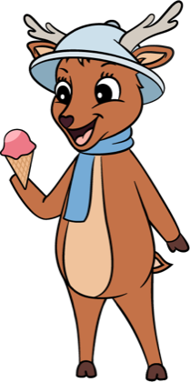

Liechtensteinhaus — Einkehr am GipfelLiechtensteinhaus — summit inn at 1,340 m
Wann offen — und wie du raufkommstWhen it's open — and how to get up
Genuss auf 1.340 mIndulgence at 1,340 m
Große SonnenterrasseLarge sun terrace
Eis, Kuchen, Sommerspritzer & Aperol mit Panoramablick — im Sommer der Platz an der Sonne.Ice cream, cakes, summer spritzers & Aperol with a panorama — the sunny spot in summer.
Saisonale Menüs & ThemenwochenSeasonal menus & theme weeks
Wechselnde saisonale Menüs & kulinarische Themenwochen das ganze Jahr: Burgerwochen, Italienische Woche und Highlights wie Spargel, Bärlauch, Pilze, Wild & Kürbis.Changing seasonal menus & culinary theme weeks all year: burger weeks, Italian week and highlights like asparagus, wild garlic, mushrooms, game & pumpkin.
Winter: SelbstbedienungWinter: self-service
Im Winter gemütliche SB-Stube — perfekter Einkehrschwung beim Rodeln & Skifahren.In winter a cosy self-service parlour — a perfect stop while tobogganing & skiing.
Terrassen-Events & SonnenuntergangTerrace events & sunsets
Sommer-Abende hoch überm Tal: Live-Musik, Sonnenuntergang und kühle Drinks auf der Terrasse — das Line-up steht im Eventkalender.Summer evenings high above the valley: live music, sunsets and cool drinks on the terrace — the line-up is in the events calendar.
Speisekarte Sommer (PDF) →Summer menu (PDF) → · Burgerreise-Menü (PDF) →Burger world-tour menu (PDF) →
Das Liechtensteinhaus in BildernThe Liechtensteinhaus in pictures
Sommerterrasse, warme Küche, Streichelzoo und Wintereinkehr — der Gipfel-Gastgeber durchs ganze Jahr.Summer terrace, hot food, petting zoo and a winter stop — the summit host all year round.


Schulen & GruppenSchools & groups
Eigene Gruppenmenüs, Platz für bis zu 300 Gäste. Schul- & Kindergartenmenü: 10,50 € pro Kind inkl. Getränk — Unverträglichkeiten & Allergien werden bei rechtzeitiger Bekanntgabe berücksichtigt. Ideal für Schulausflüge und Busgruppen.Dedicated group menus, room for up to 300 guests. School & kindergarten menu: €10.50 per child incl. a drink — intolerances & allergies accommodated if announced in advance. Ideal for school trips and coach groups.
Gruppen-AnfrageGroup enquiryTisch reservierenReserve a table
Reserviere deinen Panorama-Tisch — für Mittagessen, Kaffee auf der Terrasse oder den Einkehrschwung im Winter.Reserve your panorama table — for lunch, coffee on the terrace or a winter stop.
Mehr Genuss in der RegionMore dining in the region
Partner-Adressen rund um den Berg:Partner spots around the mountain: Seewirtshaus am Zauberberg · Zauberbar · Enzianhütte (externe Partnerexternal partners)
Streichelzoo direkt unterm RestaurantPetting zoo right below the restaurant nur im Sommersummer only
Kaninchen, Hühner und Schafe warten gleich neben der Fotozone — füttern und streicheln ausdrücklich erlaubt.Rabbits, chickens and sheep wait right next to the photo spot — feeding and petting expressly welcome.
Après-Hike — jeden Samstag Live-MusikAprès-Hike — live music every Saturday
Après-Ski am ZauberbergAprès-ski on the Zauberberg
Wandern, dann anstoßen: Juni bis Oktober jeden Samstag Live-Acts an der frischen Luft — Line-up im Eventkalender.Hike, then raise a glass: live acts in the open air every Saturday June–October — line-up in the events calendar.
Nach der letzten Abfahrt: Musik, warme Drinks und Hüttenstimmung.After the last run: music, warm drinks and mountain-hut vibes.




Platz mit Panorama sichernSecure your panorama seat
Die Anfrage öffnet dein E-Mail-Programm mit allen Angaben — wir bestätigen persönlich.The request opens your e-mail app with all details — we confirm personally.
Häufige FragenFrequent questions
Alle FAQs für Sommer & Winter →All FAQs for summer & winter →
 Hirschi
Hirschi